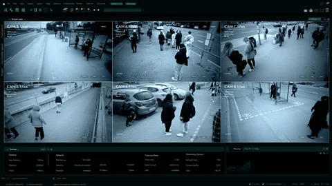
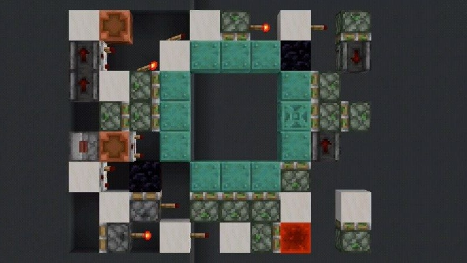
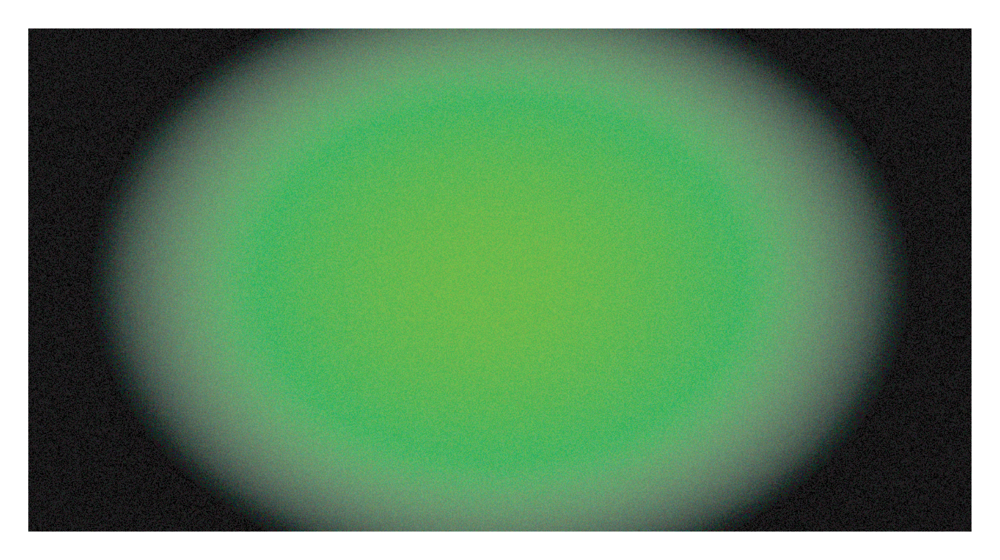

This is not a metaphorical question. It does not suggest that the Internet is dysfunctional. It asks what happened to the Internet after it stopped being a possibility. The question is very literally whether it is dead, how it died and whether anyone killed it?
BUT HOW COULD ANYONE THINK IT COULD BE OVER?
The Internet is now more potent than ever. It has not only sparked but fully captured the imagination, attention and productivity of more people than at any other point before. Never before have more people been dependent on, embedded into, surveilled by and exploited by the web. It seems overwhelming, bedazzling and without immediate alternative. The Internet is probably not dead. It has rather gone all-out. The Internet is not everywhere. Even nowadays when networks seem to multiply exponentially, many people have no access to the Internet or don’t use it at all. And yet, it is expanding in another direction. It has started moving offline.

But how does this work?
Television images started walking through screens, right into reality. This development accelerated when web infrastructure started supplementing TV networks as circuits for image circulation. Data, sounds and images are now routinely transitioning beyond screens into a different state of matter. They invade cities, transforming spaces into sites, and reality into realty. They spread through and beyond networks, they contract and expand, they stall and stumble.
Just look around you: artworks are e-mailed. Huge cloud storage drives rain down as skylines in desert locations. But by becoming real, most images are substantially altered. They get translated and reconfigured. They change their outlook, entourage and spin. A nail paint clip turns into an Instagram riot. An upload comes down as shitstorm. An animated GIF materialises as a pop-up airport transit gate.
They miss their targets, misunderstand their purpose, get shapes and colours wrong. They walk through, fall off and fade back into screens. In the past few years many people have noticed that the Internet feels awkward. It is obviously completely surveilled, monopolised and sanitised by common sense, copyright and conformism. It feels as vibrant as a newly multiplexed cinema in the nineties showing endless reruns of Star Wars.
The Internet is not dead.
It is undead and it’s everywhere.
So what does it mean if the Internet has moved offline? We might be unplugged, but this doesn’t mean we’re off the hook. The Internet persists offline as a mode of life, surveillance, production and organisation. A world of privatised knowledge patrolled and defended by rating agencies. Of maximum control coupled with intense conformism, where intelligent cars do grocery shopping until a Hellfire missile comes crashing down. The all-out Internet condition is not an interface but an environment. Older media as well as imaged people, structures and objects are embedded into networked matter. Networked space is itself a medium. It is a form of life (and death) that contains, sublates and archives all previous forms of media. Images and sounds morph across different bodies and carriers. Moreover, it is not only form that migrates across screens, but also function. Computation and connectivity permeate matter and render it as raw material for algorithmic prediction, or potentially also as building blocks for alternate networks.

As Minecraft Redstone computers are able to use virtual minerals for calculating operations, so is living and dead material increasingly integrated with cloud performance, slowly turning the world into a multilayered motherboard. But this space is also a sphere of liquidity. A condition partly created by humans but also only partly controlled by them, indifferent to anything but movement, energy, rhythm and complication.
But if images start pouring across screens and invading subject and object matter, the major and quite overlooked consequence is that reality now widely consists of images, constellations, and processes formerly evident as images. This means one cannot understand reality without understanding cinema, photography, 3D modelling, animation or other forms of moving or still image. The world is imbued with the shrapnel of former images, as well as images edited, photoshopped, cobbled together from spam and scrap. Reality itself is postproduced and scripted, affect rendered as after-effect. Under these conditions, production morphs into postproduction, meaning the world can be understood but also altered by its tools. The tools of postproduction--editing, colour correction, filtering, cutting and so on--are not aimed at achieving representation. They have become means of creation. With digital proliferation of all sorts of imagery, suddenly too much world became available.
A vast quantity of images covers the surface of the world in a confusing stack of layers. The map explodes on a material territory, which is increasingly fragmented and also gets entangled with it. Image layers get stuck as geological strata while SWAT teams patrol Amazon shopping carts. This extensive and exhausting mess needs to be edited down in real time: filtered, scanned, sorted and selected. This assigns a new role to image production, and in consequence also to people who deal with it. Image workers now deal directly in a world made of images, and can do so much faster than previously possible. But production has also become mixed up with circulation to the point of being indistinguishable. As the web spills over into a different dimension, image production moves way beyond the confines of specialised fields. It becomes mass postproduction in an age of crowd creativity. Today, almost everyone is an artist. We are pitching, spamming, chain-liking or mansplaining. We are twitching, tweeting and toasting. Improbable objects, celebrity cat GIFs, and a jumble of unseen anonymous images proliferate and waft through human bodies via Wi-Fi.
But these things are not as new as they seem. Circulationism is not about the art of making an image, but of postproducing, launching, and accelerating it. It is about the public relations of images across social networks, about advertisement and alienation. It could become the art of recoding or rewiring the system by exposing state scopophilia, capital compliance and wholesale surveillance. Of course, it might also just go as wrong as its predecessor.

Historic productivism was totally ineffective and defeated by an overwhelming bureaucratic apparatus of surveillance/workfare early on. And it is quite likely that circulationism will just end up as ornament to an Internet that looks increasingly like a mall filled with nothing but Starbucks franchises. Will circulationism alter reality’s hard- and software; its affects, drives and processes? While productivism left few traces in a dictatorship sustained by the cult of labour, could circulationism change a condition in which eyeballs, sleeplessness and exposure are an algorithmic factory?
But here is the ultimate consequence of the Internet moving offline.
If images can be shared and circulated, why can’t everything else be too? If data moves across screens, so can its material incarnations move across shop windows and other enclosures. If copyright can be dodged and called into question, why can’t private property? Why shouldn’t data clouds discharge as storming supermarkets? If circulationism is to mean anything, it has to move into the world of offline distribution, of 3D dissemination of resources. Why not slowly withdraw from an undead Internet to build a few others next to it?